Maybe not.
The UMLS evidence reaching a language model is constructed through a sequence of choices. Its release, source filters, entity linker, retrieval rule and injection format decide what knowledge the model can use. We review how these choices are made and test their effects in isolation.
- NEL · named entity linking
- KSR · knowledge subgraph retrieval
- KI · knowledge injection
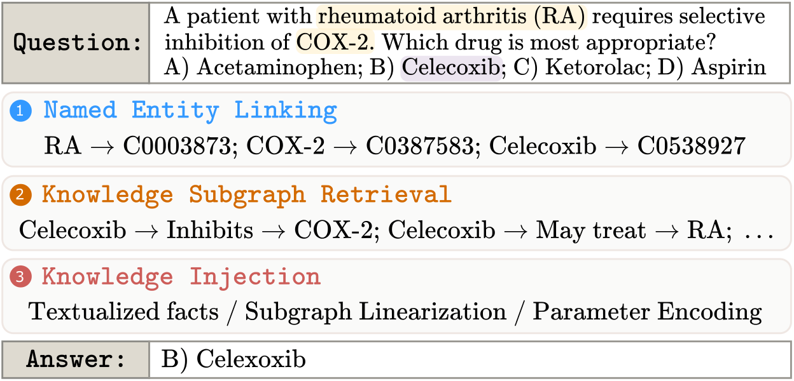
The study. A PRISMA-style review of 25 studies published between 2020 and 2025, complemented by controlled linking, retrieval and reader experiments. Two researchers independently annotated the literature, reaching 90.2% agreement. Only 6 of 25 studies report enough pipeline information for the paper’s operational reproducibility criterion.
A rich resource becomes a narrow evidence view
The Metathesaurus links concept names across source vocabularies and records relations, definitions, semantic types, hierarchies and attributes. Yet 88% of reviewed studies convert UMLS into a knowledge graph, and use is concentrated on names and relations. The cross-source and metadata choices that define the evidence are part of the intervention.
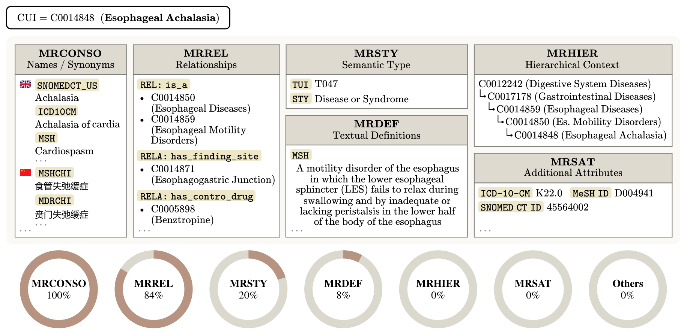
“UMLS” does not identify a stable snapshot
84% of reviewed publications do not report a release identifier. The four that do use four different releases. Release changes, source restrictions and relation filters can therefore change the available knowledge before any model is evaluated.
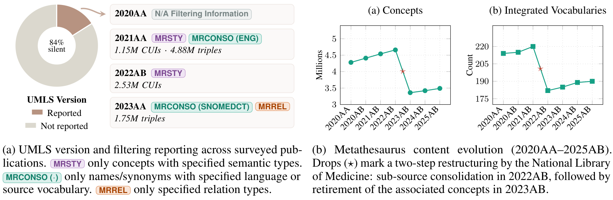
Grounding the question can still leave the answers unreachable
On the MedQA test split, both MetaMap and scispaCy ground every question stem. Their answer-side coverage is different: MetaMap reaches the correct answer in 98.2% of items and the full option set in 96.4%, compared with 86.1% and 65.0% for scispaCy. Question-only coverage hides the missing evidence on the discriminating side of a multiple-choice item.
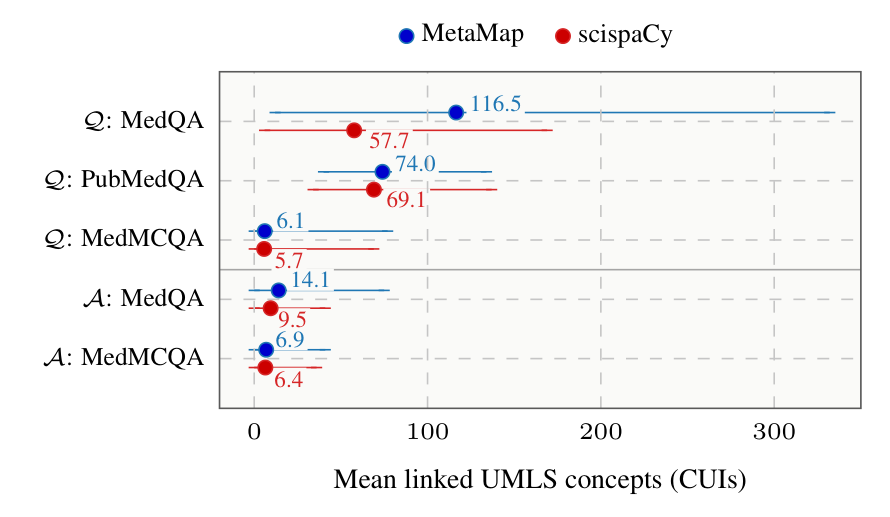
Higher yield is not higher precision. In a manual UMLS 2023AA audit of 40 MedQA answer options, 35.6% of MetaMap’s links were correct, versus 46.7% of scispaCy’s. MetaMap nevertheless grounded a correct concept in all 40 options, compared with 36 for scispaCy. Reachability and mapping quality answer different questions.
The knowledge base changes coverage even when the linker is fixed
Holding scispaCy’s mention detector fixed and swapping only its concept knowledge base raises the mean question concepts from 57.67 to 71.76 on MedQA dev when moving from 2020AA to 2021AA. Restricting to DrugBank and the Disease Database leaves fewer than one linked question concept on average on both evaluated datasets.
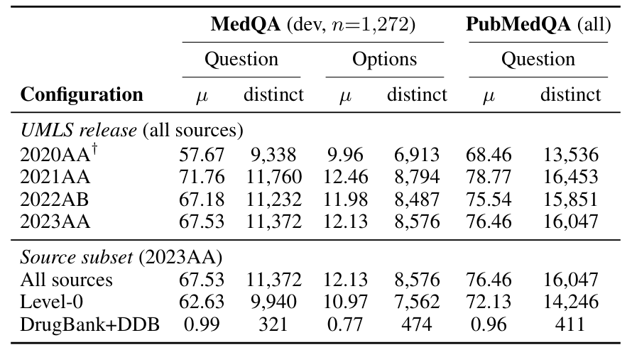
Coverage across released preprocessing pipelines
The released QA-GNN, GREASELM and DRAGON artifacts expose where linking fails before inference. The counts retain the original question–option record structure: four option records correspond to one MedQA question. The 5,092 test records are not 5,092 independent questions.
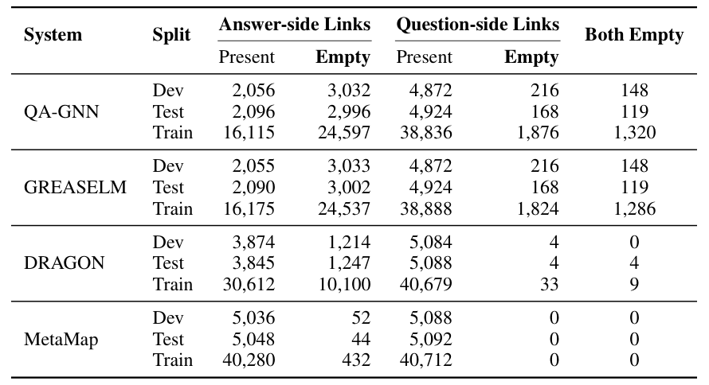
Connectivity and pruning decide which evidence survives
Expanding the full UMLS neighborhood on PubMedQA grows the mean subgraph from 3,755 nodes at two hops to more than 1.3 million at five hops. The DRAGON-filtered subset grows from 193 to 46,719 nodes. The resource is smaller, but expansion remains substantial.
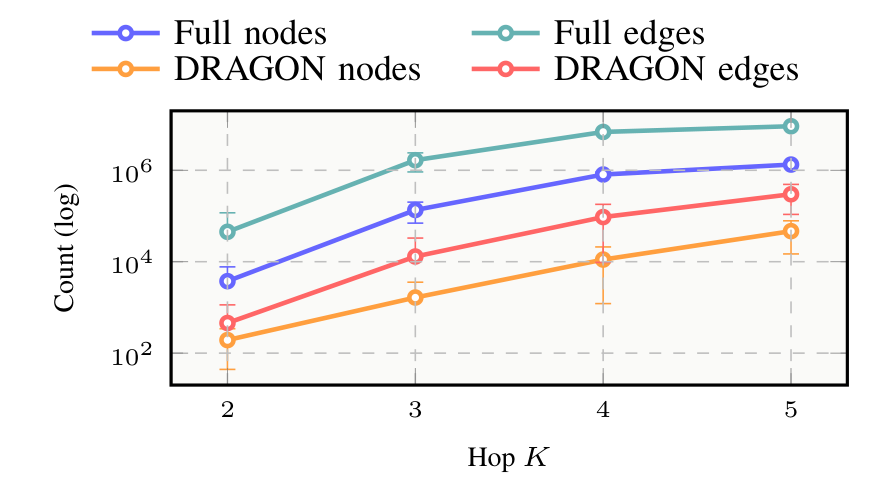
Depth is only one choice. On MedQA at two hops, pooling all linked concepts yields 87 times more nodes than retaining question-to-answer connections on full UMLS, and 60 times more on the DRAGON-filtered subset.
QA-GNN, GREASELM and DRAGON then impose a 200-node budget. It is exceeded in 70–73% of evaluation instances; only about 1.5 answer-side concepts survive per question–option pair after pruning. Missing answer concepts can therefore be lost first in linking and again in truncation.
Fallbacks matter too. Released systems insert fixed concepts such as Serine and Ethanol when linking produces no seed. In three-seed QA-GNN comparisons, replacing these placeholders with a random CUI or skipping retrieval yields similar mean accuracy. The fallback is part of what the reported score evaluates.
A benchmark score can conceal very different evidence
UMLS reaches the model through three different routes: textual linearization exposes serialized facts, structural injection provides a graph at inference, and parameter encoding uses the resource as training-time supervision. The review classifies systems by their primary route.
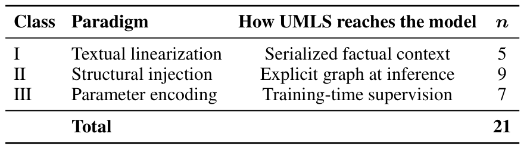
Retraining systems under seven UMLS constructions
We retrain QA-GNN and GREASELM on MedQA under seven UMLS constructions, keeping architecture, hyperparameters and training schedule at published values. Each linker is paired with a graph from the same release, and each construction is evaluated over three random seeds.
QA-GNN test accuracy spans 37.5–38.7% across the six graph configurations; its placeholder-only control reaches 37.4%. GREASELM spans 37.7–39.3%, while its control reaches 36.7%. Whether a graph helps at all is system-dependent, even when the construction comparisons appear similar.
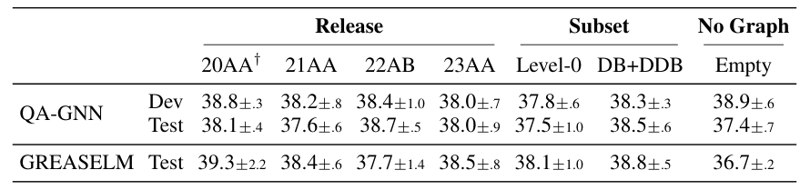
The useful evidence view changes with the task and reader
For LLM readers, we compare relation neighborhoods, question-to-answer paths and metadata-enriched evidence. No evidence view wins uniformly. Metadata-enriched paths are strongest on most MedQA and MedMCQA readers, whereas relation neighborhoods lead on nine of ten readers on PubMedQA.
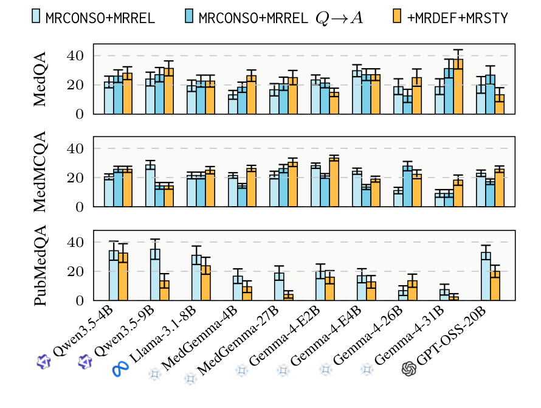
Read these results as error recovery. The reader experiments evaluate items answered incorrectly without UMLS. Their percentages describe recovery within that subset; they do not measure the change in overall benchmark accuracy, including any previously correct answers that evidence might disrupt.
The ordering also changes with the reading procedure. A chain-of-thought pilot on a MedQA subsample changes the winning view relative to answer-only prompting. Evidence format and prompting regime should be evaluated together.
The shortest path is not always the most useful
Within the Qwen3.5 scale ladder, path depth changes recovery under matched evidence conditions. The 9B reader performs best at three hops; the 35B reader performs best at four. Choosing the smallest graph distance alone misses how the reader uses intermediate biomedical concepts.
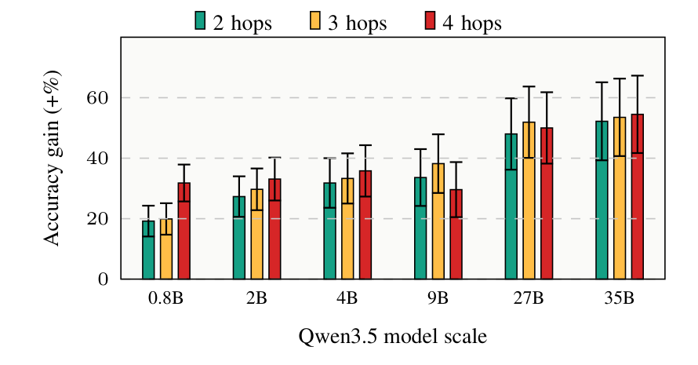
Make the UMLS construction reportable
The paper’s minimum reporting checklist makes the evidence construction explicit, from resource selection to missing-seed behavior.
UMLS snapshot
- Release version. Identify the source snapshot.
- Subset. Name source vocabularies and concept/relation filters.
- Metadata. Specify attached fields, including definitions and semantic types.
Named entity linking
- Linker. Report the tool and non-default settings.
- Linking result. Report entity coverage and unlinked items.
Knowledge subgraph retrieval
- Connectivity rule. State which concepts are connected.
- Depth and scale. Report hop depth and resulting subgraph size.
- Pruning. State the criterion and node budget.
- Fallback. Explain what happens when no seed is linked.
Reviewed literature
Compare the 25 system annotations by how UMLS reaches the model. Each entry retains its source tables, linking and retrieval choices, method notes and available paper/code links.
Textual linearization
Serialized factual context · 5 systems
KnowledgeDA
Ding et al. (Findings of ACL 2023)
- UMLS
- MRCONSO · MRREL · MRSTY · UMLS subset
- Linker
- neural embedding
- Retrieval
- K=2 · Budget: unspecified
Mention-to-entity similarity matching; 2-hop relation-consistent replacements; data augmentation around UMLS-grounded entities. UMLS 2021AA; 1.15M CUIs, 4.88M triples after filtering to medicine-related semantic types and 502 relation types.
KG-Infused LLM for Virtual Health Assistant
Katta et al. (ICMLA 2024)
- UMLS
- MRCONSO · MRREL · MRDEF · UMLS subset
- Linker
- scispaCy
- Retrieval
- K=1 · Budget: 20 rel.
Builds large Neo4j KG from UMLS subsets (MSH + NCI), 622K nodes / 4.94M edges; RAG-style pipeline with semantic matching + learning-to-rank; not question-specific subgraph construction.
KG-Rank
Yang et al. (BioNLP 2024)
- UMLS
- MRCONSO · MRREL
- Linker
- LLM prompt
- Retrieval
- K=1 · Budget: unspecified
UMLS as primary medical KG; one-hop triples retrieved and re-ranked before LLM generation. Similarity ranking + MMR + cross-encoder re-ranking. Evaluated on LiveQA, ExpertQA-Med/Bio, MedicationQA.
Heterogeneous Knowledge Grounding
Zhao et al. (WWW 2024)
- UMLS
- MRCONSO · MRREL · UMLS subset
- Linker
- neural embedding
- Retrieval
- K=1 · Budget: unspecified
DDB subset (50K triples); UMLS mentioned mainly as future direction — method uses unspecified structured medical KB + textbook corpus. Medical RAG; UMLS not operational in method as reported.
GLaM: Graph-Aligned Language Models
Dernbach et al. (AAAI-SSS 2024)
- UMLS
- MRCONSO · MRREL · UMLS subset
- Linker
- not specified
- Retrieval
- No per-question retrieval
UMLS as training graph for graph-aligned LLM fine-tuning; 4 relation types, 126K triples. QA pairs synthesized from UMLS graph neighborhoods + subgraph encodings; evaluated on fact recall and multi-hop reasoning over UMLS.
Structural injection
An explicit graph at inference · 9 systems
DRAGON: Deep Bidirectional Language-Knowledge Graph Pretraining
Yasunaga et al. (NeurIPS 2022)
- UMLS
- MRCONSO · MRREL
- Linker
- scispaCy
- Retrieval
- K=2 · Budget: 200 nodes
Deeply bidirectional text-KG pretraining; 2-hop expansion + entity linking; masked LM + KG link prediction joint objectives. Strong fit.
QAVSA
Laube & Eliasmith (RepL4NLP 2024)
- UMLS
- MRCONSO · MRREL
- Linker
- scispaCy
- Retrieval
- K=2 · Budget: unspecified
Follows QA-GNN-style graph setup (300K nodes / 1M edges); replaces GNN with vector symbolic algebra + MLP reasoning on MedQA-USMLE.
QAT: Relation-Aware Language-Graph Transformer
Park et al. (AAAI 2023)
- UMLS
- MRCONSO · MRREL
- Linker
- not specified
- Retrieval
- K=2 · Budget: 200 nodes
Per-QA subgraph retrieval (9K nodes / 44K edges); meta-path relation encoding. Q→A connectivity.
QA-GNN: Reasoning with Language Models and Knowledge Graphs for Question Answering
Yasunaga et al. (NAACL 2021)
- UMLS
- MRCONSO · MRREL · UMLS subset
- Linker
- scispaCy
- Retrieval
- K=2 · Budget: 200 nodes
Self-constructed biomedical KG (DDB portion of UMLS + DrugBank; 9K nodes / 44K edges). Question–choice-specific subgraph + LM-based relevance scoring + joint LM+KG reasoning. Canonical benchmark paper.
Towards Efficient Methods using KG Embeddings
Sengupta et al. (BIBM 2024)
- UMLS
- MRCONSO · MRREL · MRDEF
- Linker
- MetaMap
- Retrieval
- K=1 · Budget: unspecified
UMLS definitions + pre-trained UMLS KGE fused into BERT/RoBERTa for COVID-QA / PubMedQA. Embedding/definition infusion; not subgraph construction.
Graph Neural Prompting (GNP)
Tian et al. (AAAI 2024)
- UMLS
- MRCONSO · MRREL
- Linker
- scispaCy
- Retrieval
- K=2 · Budget: unspecified
NEL → 2-hop subgraph → GNN + cross-modality pooling + domain projector. UMLS as biomedical-domain KG encoded into graph neural prompts for LLM prompting.
Medical Knowledge-Enriched Textual Entailment
Yadav et al. (COLING 2020)
- UMLS
- MRCONSO · MRREL
- Linker
- scispaCy
- Retrieval
- K=2 · Budget: unspecified
UMLS + SNOMED-CT + ICD10 to enrich vocabulary graph for MEDIQA-RQE entailment. Knowledge-enriched graph + BERT via GCN + attention fusion.
DRLK
Zhang et al. (EMNLP 2022)
- UMLS
- MRCONSO · MRREL
- Linker
- scispaCy
- Retrieval
- K=2 · Budget: 200 nodes
Pre-computed medical KG (DDB ⊂ UMLS + DrugBank; 9K nodes / 44K edges). QA-GNN/GREASELM-style preprocessing; dynamic hierarchical LM-KG interaction.
GREASELM
Zhang et al. (ICLR 2022)
- UMLS
- MRCONSO · MRREL · UMLS subset
- Linker
- scispaCy
- Retrieval
- K=2 · Budget: 200 nodes
Self-constructed medical KG (DDB ⊂ UMLS + DrugBank; 9K nodes / 44K edges). NEL + 2-hop bridge entities + top-200 node retrieval; LM-KG cross-modal fusion across layers.
Parameter encoding
Training-time supervision · 7 systems
Adapter Modules for Knowledge Enhancement
Vladika et al. (ICAART 2024)
- UMLS
- MRCONSO · MRREL · UMLS subset
- Linker
- not specified
- Retrieval
- No per-question retrieval
UMLS 2023AA; SNOMED CT US subset (1.75M triplets). Top-20 UMLS relations + METIS partitioning; entity-prediction adapter training; evaluated on BioASQ-7b / PubMedQA / MedNLI / HoC.
InfuserKI
Tian et al. (EMNLP 2024)
- UMLS
- MRCONSO · MRREL
- Linker
- not specified
- Retrieval
- No per-question retrieval
UMLS triplets (2.5K & 25K) as domain KG for infuser-guided knowledge integration via adapters. Parameter-level integration; question-style supervision from UMLS triplets.
UMLS-KGI-BERT
Mannion et al. (ClinicalNLP 2023)
- UMLS
- MRCONSO · MRREL · MRSTY · UMLS subset
- Linker
- string match
- Retrieval
- K=1 · Budget: unspecified
UMLS 2022AB; restricted to human-biology/medicine semantic types (2.53M CUIs). Pretraining via entity prediction, link prediction, triple classification; downstream clinical NER. Cited in §5.1 as the sole reviewed system that evaluates linker performance directly.
Selective UMLS Knowledge Infusion
Park et al. (Scientific Reports, 2024)
- UMLS
- MRCONSO · MRREL · MRSTY · SRDEF
- Linker
- not specified
- Retrieval
- No per-question retrieval
Extends MoP by comparing METIS partitions vs. semantic-group partitioning of UMLS for adapter pretraining; evaluated on BioASQ7b / PubMedQA / MedQA. (SRDEF is part of the UMLS Semantic Network, not the Metathesaurus.)
Mixture-of-Partitions (MoP)
Meng et al. (EMNLP 2021)
- UMLS
- MRCONSO · MRREL · UMLS subset
- Linker
- not specified
- Retrieval
- No per-question retrieval
SNOMED CT US subset. UMLS partitioned via METIS into smaller subgraphs; adapter pretraining per partition. Global KG partitions, not per-question retrieval. Evaluated on PubMedQA / BioASQ7b / BioASQ8b / MedQA / MedNLI.
UmlsBERT
Michalopoulos et al. (NAACL 2021)
- UMLS
- MRCONSO · MRSTY
- Linker
- cTAKES
- Retrieval
- No per-question retrieval
UMLS 2020AA. Pretraining with UMLS Metathesaurus: CUI-shared term linking + semantic type embeddings. Evaluated on MedNLI + clinical NER.
DAKI
Lu et al. (Findings of EMNLP 2021)
- UMLS
- MRCONSO · MRREL
- Linker
- not specified
- Retrieval
- K=1 · Budget: unspecified
UMLS Metathesaurus graph (1.77M triples) as one of three knowledge sources, encoded through a dedicated knowledge adapter and combined via an attention-based controller. UMLS adapter pretrained on graph triples; evaluated on MEDIQA-2019, TRECQA-2017, MedNLI + NER.
Mechanism not specified
No primary mechanism reported · 4 systems
MediSage
Choudhury et al. (WWW 2023)
- UMLS
- MRCONSO · MRREL · MRSTY
- Linker
- string match
- Retrieval
- K=3 · Budget: unspecified
Conversational clinical decision-support over EHR + clinical KG; BioLinkBERT NEL fallback. Not centered on UMLS as core source.
HiPrompt
Lu et al. (SIGIR 2023)
- UMLS
- MRCONSO
- Linker
- not specified
- Retrieval
- No per-question retrieval
Biomedical KG–to-hierarchy alignment via hierarchy-oriented few-shot prompting; retrieval + re-ranking for entity–term alignment. Borderline case retained for §5 discussion of adjacent settings.
Healthcare QA Assistant
Sukhwal et al. (ICIS 2022)
- UMLS
- MRCONSO
- Linker
- scispaCy
- Retrieval
- K=1 · Budget: unspecified
Disease-specific KG (7.17K CUIs) from PubMed abstracts + OpenIE; CUIs + synonym merging; KG-only vs. LM-only vs. joint reasoning comparison on a skin-eczema QA assistant.
Chest ImaGenome
Wu et al. (NeurIPS 2021)
- UMLS
- MRCONSO
- Linker
- scispaCy
- Retrieval
- No per-question retrieval
Anatomy-centered scene graphs from radiology reports; UMLS as indexing/normalization layer only (scene-graph nodes → CUIs). Retained for adjacent-settings discussion.
Review protocol
The Scopus search was run on January 15, 2026, targeting English-language conference and journal work published during 2020–2025. Two researchers annotated the screened literature independently; disagreements were resolved through discussion.
- UMLS must play a substantive technical role.
- The task must be medical question answering or a related reasoning setting.
- The method must support comparison across knowledge grounding, retrieval and injection.
Fields are recovered from the paper and supplement, then released code, then code from cited systems. Unavailable fields remain explicitly unreported.
Search query
ABS (
("*knowledge graph*")
OR ("knowledge base*")
OR ("structured")
OR ("graph*")
)
AND ABS (
("natural language processing")
OR ("NLP")
OR ("language model*")
OR ("LLM*")
OR ("LM*")
)
AND ABS (
("question answering")
OR ("*QA*")
OR ("reasoning*")
)
AND PUBYEAR > 2019
AND PUBYEAR < 2026
AND LIMIT-TO ( SRCTYPE, "p" )
AND LIMIT-TO ( PUBSTAGE, "final" )
AND (
LIMIT-TO ( DOCTYPE, "cp" )
OR LIMIT-TO ( DOCTYPE, "ar" )
)
AND LIMIT-TO ( SUBJAREA, "COMP" )
AND LIMIT-TO ( LANGUAGE, "English" )Benchmark coverage
Closed-form: PubMedQA, BioASQ, MedQA (USMLE) and MedMCQA.
Open-form: MedicationQA, COVID-QA and ExpertQA.
Screening record
The repository records 20 screened papers outside the analytical corpus, grouped by their exclusion rationale.
UMLS Not Methodologically Used
- Gupta et al. (2024) — Cancer CPG QA using LLMs
Method centers on NCCN guideline KG, not UMLS. UMLS appears only as background.
- Aasman (2024) — Neuro-Symbolic Document Matching
UMLS mentioned as example healthcare taxonomy; task is document matching.
- Chen et al. (2023) — RoBERT-Agr
No UMLS involvement; agricultural domain.
- Crum et al. (2024) — Enriching Ontologies with Disjointness Axioms
Ontology enrichment on DBpedia; no UMLS-based method.
- Liu et al. (2024) — KNOWFORMER
Generic KG reasoning; no UMLS.
- Patel (2024) — Optimizing KGE for QA Performance
Generic KGQA; not UMLS-based, not medical.
- Schulz — Ontology-Based Annotation of Clinical Narratives
Annotation principles; not a QA/reasoning system.
- Tian et al. (2022) — Evaluation System Framework for Medical AI
Evaluation framework; UMLS not methodologically involved.
- Wang et al. (2024) — Understanding Reasoning Ability of LMs
Analyzes LM reasoning over generic KGs; not UMLS.
- Youn & Tagkopoulos (2023) — KGLM
Generic KG link prediction; no medical/UMLS scope.
- Zhang et al. (2021) — GMH
KG completion; no UMLS, not QA.
- Zhang et al. (2024) — Making LLMs Perform Better in KG Completion
Generic KGC; no UMLS, not medical QA.
- Agrawal et al. (2024) — Can KGs Reduce Hallucinations in LLMs (Survey)
Survey of KG-augmented LLM methods; not a primary methodology paper.
- Cai et al. (2024) — Bringing Two Worlds Together (Survey)
Broad survey of LLM-KG integration.
Task Outside Scope (UMLS Used, but Not for MQA/Reasoning)
- Adjei-Frempah et al. (2024) — KB2Bench
UMLS used to generate benchmark QA pairs, not to answer questions. Benchmark construction is outside our scope.
- Luo et al. (2023) — Systematic Assessment of Factual Knowledge in LLMs
Generates factual questions from KGs to test LLMs; benchmark-style evaluation, not UMLS-based MQA methodology.
- Sakhovskiy et al. (2023) — Graph-Enriched Biomedical LMs (Research Proposal)
Research proposal without concrete implementation.
- Wallace et al. (2024) — Pruning Cycles in UMLS Metathesaurus
Task is graph cleanup / cycle pruning; not MQA.
- Jiang et al. (2023) — Text-Augmented Open KGC
Uses UMLS-PubMed as KGC benchmark; task is KG completion, not QA.
- He et al. (2020) — BERT-MK
UMLS-central but downstream tasks are entity typing and relation classification, not MQA/reasoning.
Code and literature annotations
The repository accompanies the review with per-paper annotations, linker comparisons, retrieval diagnostics and reader-experiment code. Full UMLS releases remain licensed local inputs and are not bundled with this page.
Citation
@misc{zeng_umls,
title = {Are We Done with UMLS Injection into Language Models
for Medical Question Answering?},
author = {Yiran Zeng and Giacomo Frisoni and
Lorenzo Molfetta and Gianluca Moro},
note = {Manuscript}
}